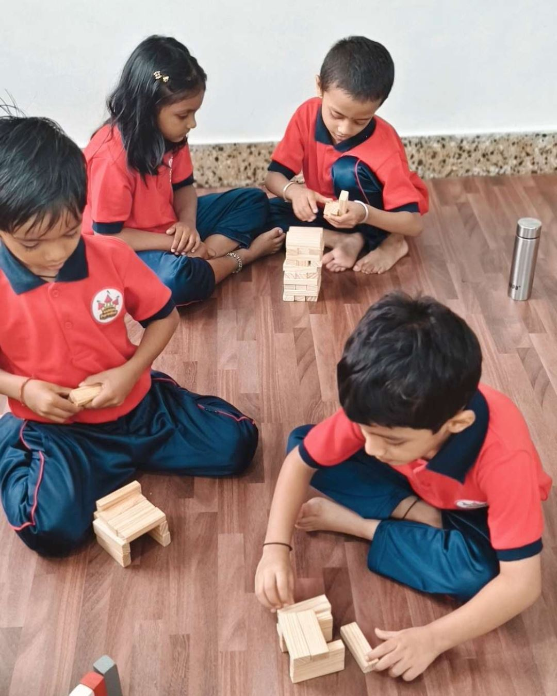
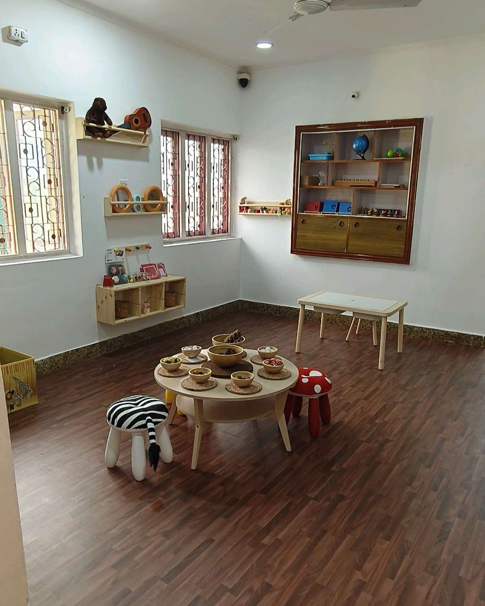
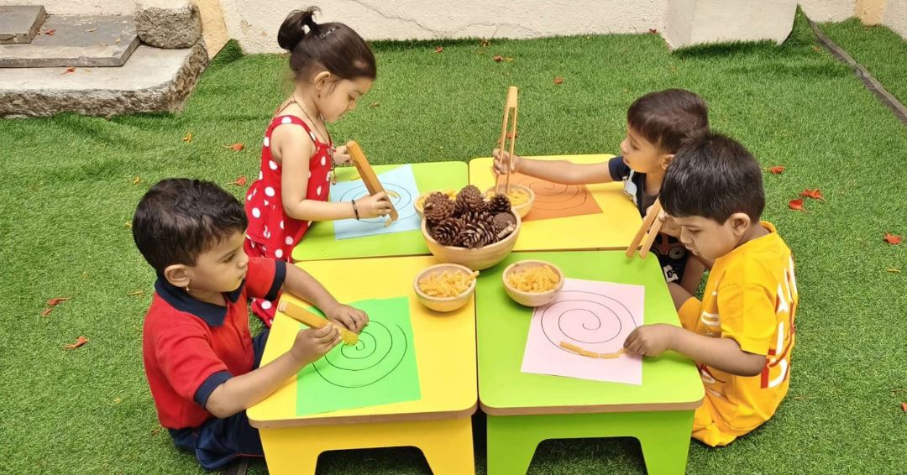
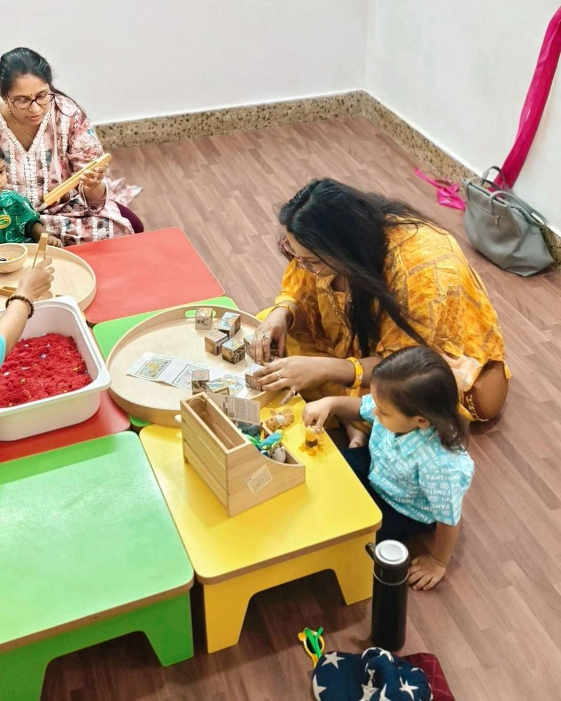
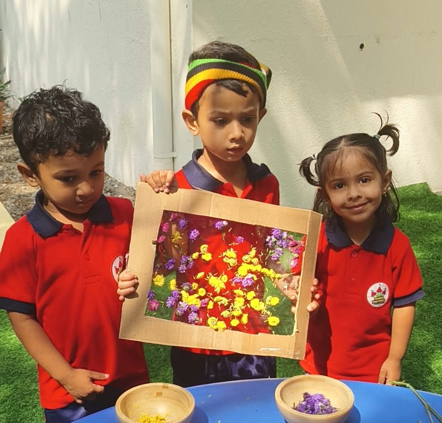
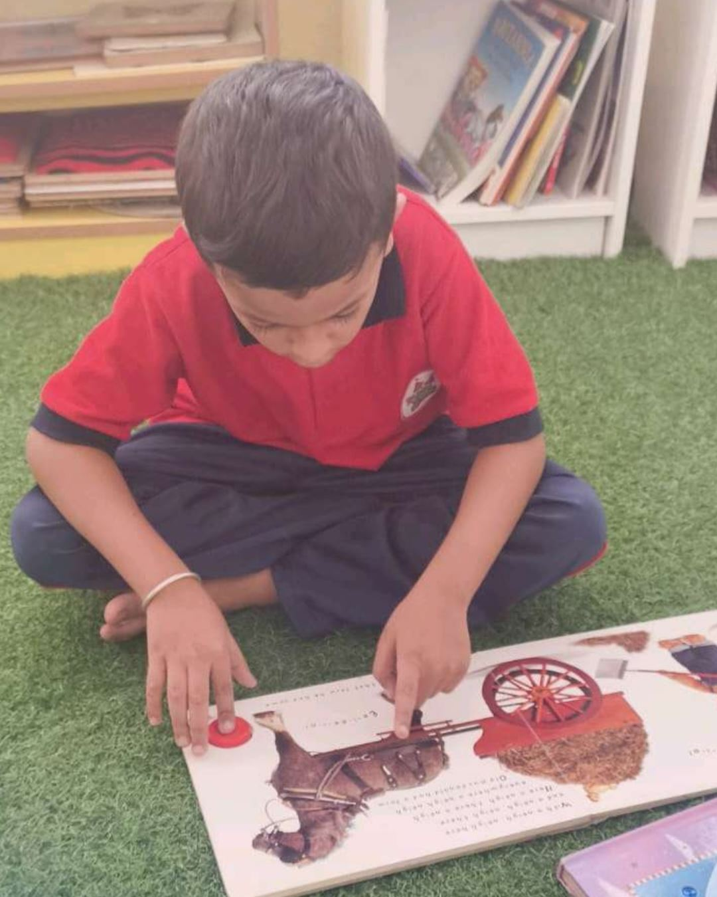
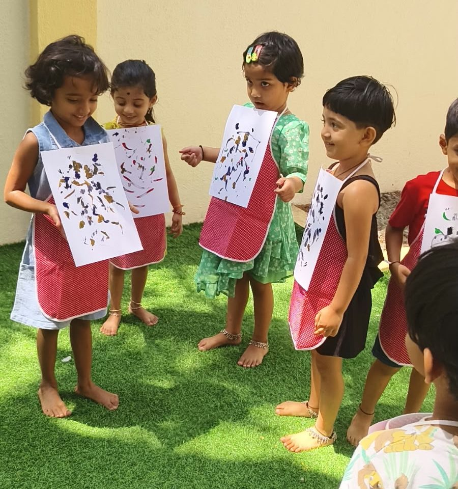

Preschool in Vijayanagar, Bengaluru.
Give your child a joyful first step into learning. Since 2013, Kiddos Paradise has welcomed young children in Vijayanagar with hands-on Montessori and Reggio Emilia-inspired learning for ages 1 to 6 years.
Prefer to talk? Call 99727 76012 | 91879 63957



A neighbourhood preschool you can trust.
Young children learn best when they feel safe, curious and trusted to explore. Every day at Kiddos Paradise is built around that belief.
- Hands-on learning with sand, water, clay, blocks, art and stories
- Children choose activities and work at their own pace
- Small group and one-to-one attention
- Strong early foundations in reading, numbers and communication
- Live CCTV access for parents in designated areas
- Daycare available until 7:00 PM for working parents
A class for every little stage.
Toddler
A gentle first step with play, songs, movement and sensory fun.
◷ 9:30 AM–12:00 PM 2–3 yearsPlaygroup
Play-based learning that builds curiosity and early social skills.
◷ 9:30 AM–12:30 PM 3–4.5 yearsNursery
Early literacy, numbers and creative expression through guided play.
◷ 9:30 AM–1:00 PM 4.5–5.5 yearsLKG
Interactive phonics, early maths and thematic inquiry.
◷ 9:30 AM–1:30 PM 5.5–6.5 yearsUKG
Reading fluency, logical thinking and school readiness.
◷ 9:30 AM–1:30 PM



Right here in Vijayanagar.
📍 20th Cross Road, opposite St. John the Baptist Church, CHBS Layout, MC Layout, Vijayanagar, Bengaluru 560040
Preschool in Vijayanagar: FAQs.
Where is your preschool in Vijayanagar?
We are on 20th Cross Road, opposite St. John the Baptist Church, CHBS Layout, MC Layout, Vijayanagar, Bengaluru 560040.
What age can my child join preschool?
Our preschool classes are for children from 1 to 6 years, from Toddler through to UKG. UKG runs up to 6.5 years.
What are the preschool timings?
Classes start at 9:30 AM and end between 12:00 PM and 1:30 PM, depending on the class.
What teaching approach do you follow?
Our approach is inspired by Montessori and Reggio Emilia, along with progressive, play-based learning.
Can parents watch their child on CCTV?
Yes. Parents get live CCTV access covering designated areas of the school. Please ask the school how to get access.
How do I apply for admission?
Book a school visit, call 99727 76012 or 91879 63957, or send us a WhatsApp message. Our team will guide you through the next steps.
Come see our Vijayanagar preschool.
Meet our teachers, see the space and ask us anything. Call 99727 76012 | 91879 63957 or book a visit today.